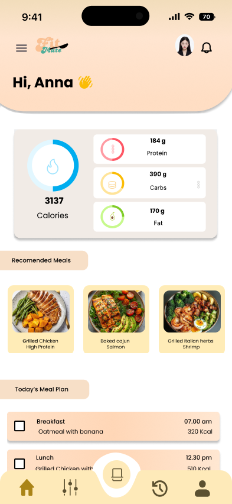
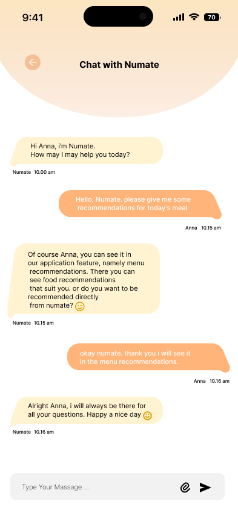
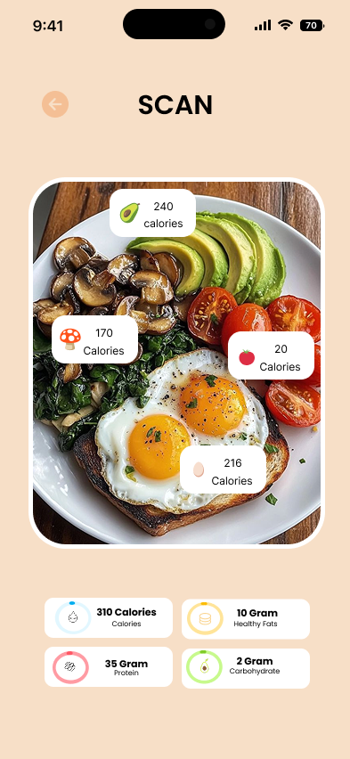

Fitmate: AI-Powered Nutrition App
An intelligent nutrition companion designed to simplify everyday food choices through automated meal scanning, personalized dietary insights, and AI assistance.
1. The Story Behind
Maintaining a healthy diet can be challenging when users have limited information about the food they consume or struggle to plan meals matching their nutritional needs. Traditional food tracking is often time-consuming due to manual searching and data entry. Fitmate was created to make nutrition tracking engaging and accessible through AI.
2. Intended Impact & Goals
The main goal is to simplify understanding and managing daily nutrition by combining food scanning, nutrition insights, and AI guidance without making the process complicated. It also provides an interactive approach where users can learn, explore, and receive recommendations throughout their eating journey.

Dashboard & Meal Tracking

AI Chat Guidance

Food Scanner & Recipes
3. What I Learned
Working on Fitmate taught me how to design an interface that combines multiple AI-driven features within a single cohesive user journey. I learned to structure information carefully so that complex outputs, such as food analysis and nutritional information, remain easy to understand.